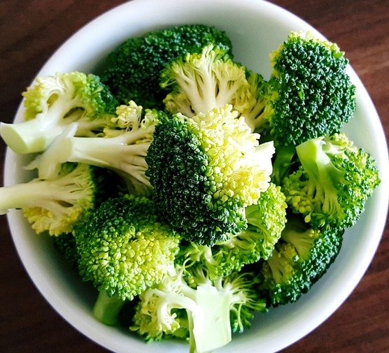
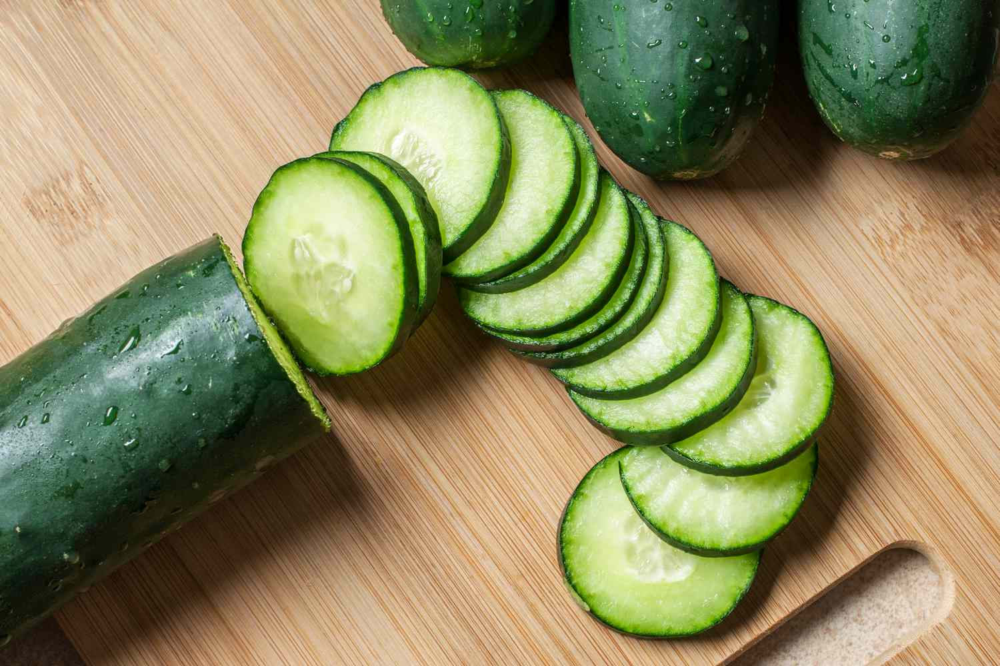
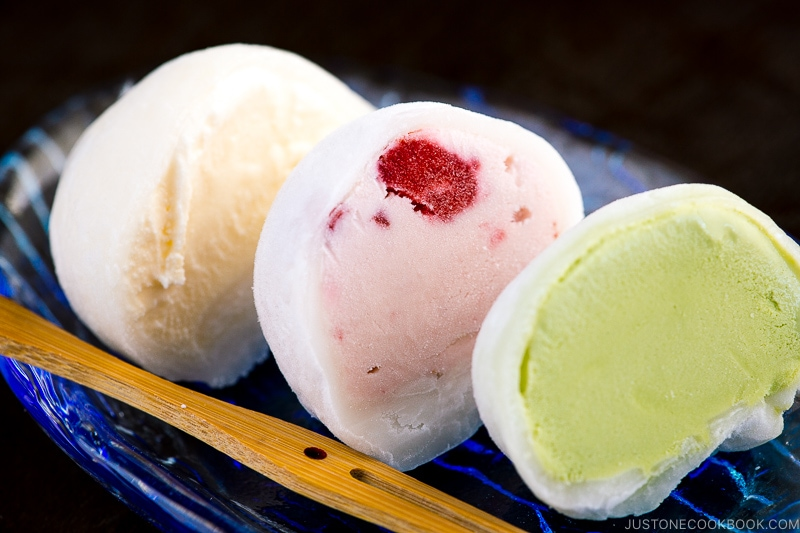

- Sliced Bread
- Pound Cake
- Bagels
- Baguette
- Cheese Cake

Bigger Image Here
Best Bread

Bigger Image Here
The best Cake

Bigger Image Here
Bagel recipe\

Bigger Image Here
Recipie for Baguette

Bigger Image Here
Cheese ckae praise
- Milk
- Eggs
- Cheese
- Yogurt
- Heavy Cream

Bigger Image Here
Organic Vs None
Bigger Image Here
Egg Status
Bigger Image Here
Cheese

Bigger Image Here
Yogurt Receipe

Bigger Image Here
What is Heavy Cream?
- Broccoli 
- Lettuce
- Tomato
- Cucumber 
- Potatoes
Bigger Image Here
Broccoli Health Benefit

Bigger Image Here
Types of Lettuce

Bigger Image Here
How to grow tomaatoes?
Bigger Image Here
Why are Cucumbers Waxy
Bigger Image Here
Easy Receipe
- Lotion
- Shampoo
- Toothpaste
- Body/Face Wash
- Pain Reliever
Bigger Image Here
Top 10 Best Lotion
Bigger Image Here
Buy Here
Bigger Image Here
What is in Tooth paste?

Bigger Image Here
Buy it Here

Bigger Image Here
Article on Pain Reliever
- Iced Tea
- Fruit Snacks
- Sushi
- Mochi 
- Turkey Bacon

Bigger Image Here
Make Iced Tea

Bigger Image Here
Buy Fruit Snacks

Bigger Image Here
Order Sushi
Bigger Image Here
Make Mochi

Bigger Image Here
Air Fried Turkey Bacon